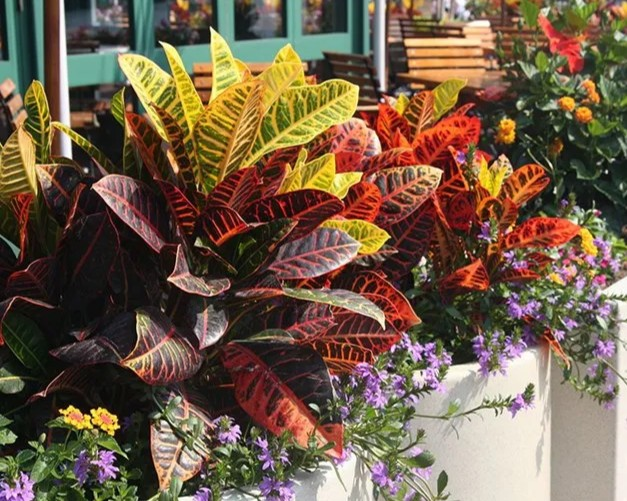

گیاهان چه تأثیری بر روح و روان انسان دارند؟
گیاهان با داشتن ویژگیهای نزدیک به انسان میتوانند تأثیر عمیقی بر روح و روان او بگذارند و به بهبود کیفیت زندگی کمک کنند. با گسترش زندگی ماشینی و فاصله گرفتن انسان از طبیعت، نوعی خلأ روحی در زندگی مدرن ایجاد شده است.
انسان همواره از طبیعت الهام گرفته و ارتباط با گیاهان یکی از سادهترین و مؤثرترین راهها برای بازگشت آرامش به زندگی روزمره است.
در این مقاله به بررسی تأثیر گیاهان و گلها بر روح و روان انسان میپردازیم و دلایل علمی و احساسی این ارتباط عمیق را مرور میکنیم.
کدام ویژگیها گیاهان را با انسان سازگار میکند؟
میان انسان و گیاهان شباهتهای زیادی وجود دارد. گیاهان نیز مانند انسان برای ادامه حیات به آب، غذا و مراقبت نیاز دارند و ممکن است دچار بیماری شوند.
همانطور که انسان به توجه و رسیدگی نیاز دارد، گیاهان نیز به خاک مناسب، آبیاری منظم، رطوبت و دمای مناسب احتیاج دارند. حتی لمس کردن و صحبت کردن با گیاهان میتواند بر سلامت آنها و روحیه انسان تأثیر مثبت بگذارد.
تأثیر گیاهان بر سلامت روان
برای سلامت روح و روان انسان باید به رفاه جسمی، روانی و اجتماعی توجه کرد. تحقیقات انجامشده در مراکز معتبر مانند دانشگاه Rutgers آمریکا نشان میدهد ارتباط مستقیمی میان گیاهان و بهبود سلامت روان وجود دارد.
ایجاد حس مثبت با گیاهان
یکی از مهمترین تأثیرات گیاهان، ایجاد احساس شادی، آرامش و مثبتاندیشی است. هدیه دادن گل یا نگهداری از گیاه باعث کاهش غم و استرس و افزایش نشاط میشود.
تحقیقات نشان میدهد فعالیتهایی مانند کاشت، خرید و پرورش گلها میتوانند احساسات منفی و افکار مزاحم را کاهش دهند و احتمال ابتلا به افسردگی را کم کنند.
برقراری ارتباط اجتماعی با حضور گیاهان
حضور گل و گیاه در محیط باعث میشود افراد راحتتر با یکدیگر ارتباط برقرار کنند. هدیه دادن گل احساس صمیمیت و نزدیکی را افزایش میدهد و روابط انسانی را تقویت میکند.
ایجاد حس امنیت و آرامش
گیاهان حس آرامش، امنیت و صمیمیت را در فضا افزایش میدهند. گلهای رنگی میتوانند تأثیر مستقیمی بر کاهش اضطراب و افزایش حس خوب در انسان داشته باشند.
تأثیر رنگ گیاهان بر اعصاب و روان
رنگهای سفید، صورتی و بنفش باعث آرامش میشوند، در حالی که رنگهایی مانند قرمز، زرد و نارنجی انرژی، هیجان مثبت و سرزندگی را افزایش میدهند.
فعالیتهای باغبانی باعث تحرک بدنی شده و ترشح اندورفین را افزایش میدهد؛ هورمونی که نقش مهمی در کاهش استرس و افزایش حس شادی دارد.
سخن پایانی
ارتباط با گیاهان تأثیر چشمگیری بر روح و روان انسان دارد. گلها با ایجاد احساس شادی، آرامش و مثبتاندیشی، افکار منفی را کاهش میدهند و کیفیت زندگی را بهبود میبخشند. حضور گیاهان در زندگی روزمره میتواند انسان را به آرامش، صمیمیت و سلامت روان نزدیکتر کند.
منبع: www.gol.gift